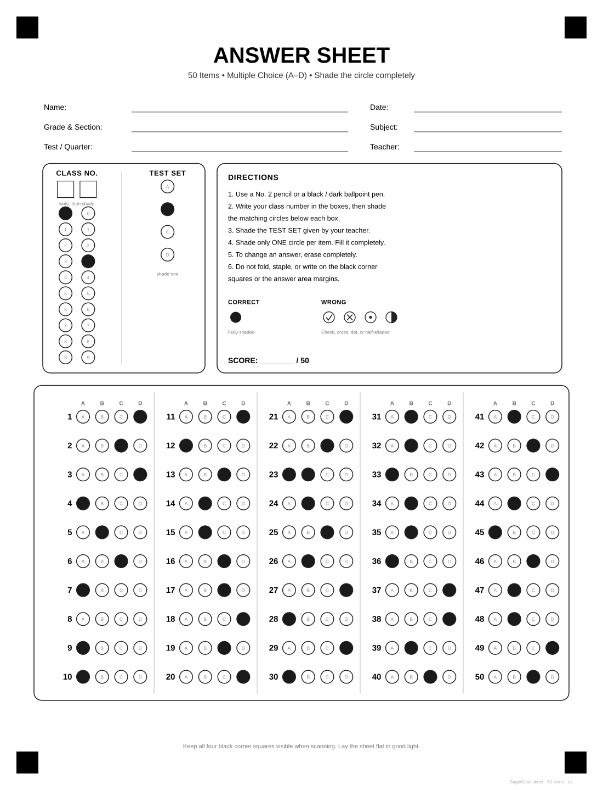
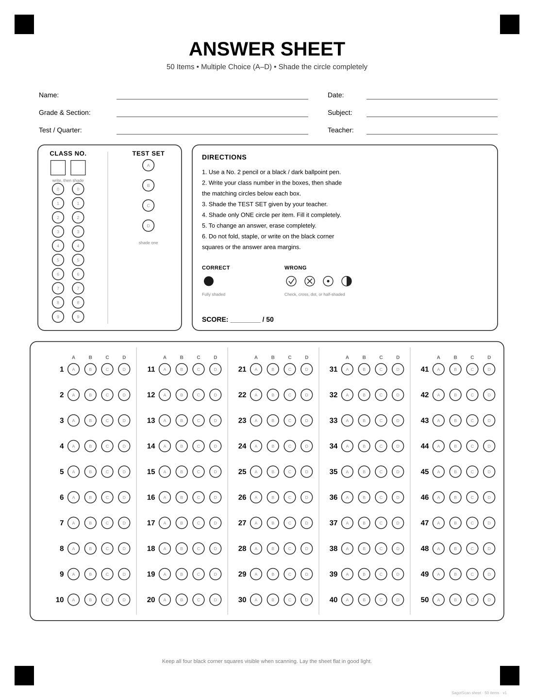

Know which questions failed
Difficulty and discrimination for every item, a Retain, Revise or Reject decision, and notes when the key may be wrong. KR-20 and the standard error show how reliable the whole test is.
Sample data.
For teachers. Free. Runs in your browser.
Take a photo of each filled sheet. SagotScan scores it, then gives you the class MPS and item analysis, ready for Excel. No account, and your photos never leave your device.
Libre. Walang account. Hindi umaalis ang litrato sa device mo.
It opens with a built-in sample sheet so you can try it first. To check your own class you need the SagotScan answer sheet (30, 50 or 60 items).

One blank sheet works for every test, in 30, 50 or 60 items. Print it here.
Type the letters for Sets A to D, or scan a key sheet. Giving a 40-item test? Use the 50-item sheet and set the test to 40.
Take a photo or upload one. SagotScan reads the class number, the set and every answer, and flags double marks, faint marks and erasures for you to check.
Class MPS with the DepEd mastery levels, item analysis, an Excel file and a printable report.
The dashboard, with sample data.
Difficulty and discrimination for every item, a Retain, Revise or Reject decision, and notes when the key may be wrong. KR-20 and the standard error show how reliable the whole test is.
Sample data.
MPS with the DepEd mastery levels, against a target you can change from the usual 75%. Per section, per set, and a score distribution.
Sample data: students by percent score.
Found a wrong key after scoring? Accept another letter, change the key, credit everyone or drop the item. Every score, the MPS and the item analysis recompute. Anything destructive has an Undo.
An Excel file, a printable report (with an option to leave student names out), and a saved test file you can reopen later.
SagotScan reads one specific printed sheet. Because it is always the same, the same blank sheet works for every test. Only your answer key changes.
Prints on A4 or Letter at 100%. Photos work best flat and in good light.

Yes. There is nothing to buy and nothing to sign up for.
Nowhere. SagotScan reads each photo in your browser. It has no server and loads nothing from other sites, so nothing is uploaded.
SagotScan has no server, so scoring and item analysis run in your browser. Once the page is open, losing your connection will not stop it. If you reload with no connection, the page itself will not load.
No. Open the page in Chrome, Edge, Firefox or Safari on a phone or a computer.
Not yet. SagotScan reads the 30, 50 and 60-item sheets on this page. Print them from the answer sheet page.
Use the 50-item sheet and set the test to 40 items. Items after 40 are ignored.
Give each class a section name. You get the MPS per section and for all of them together, and the item analysis can be shown for one section at a time.
Yes. You get an Excel file with scores, MPS, every answer, the item analysis and notes on anything flagged. There is also a printable report.
Fix it after scoring: accept another letter, change the key, credit everyone, or drop the item. Everything recomputes.
You can read it on GitHub. No licence has been chosen yet, so it is free to use but not yet free to reuse.